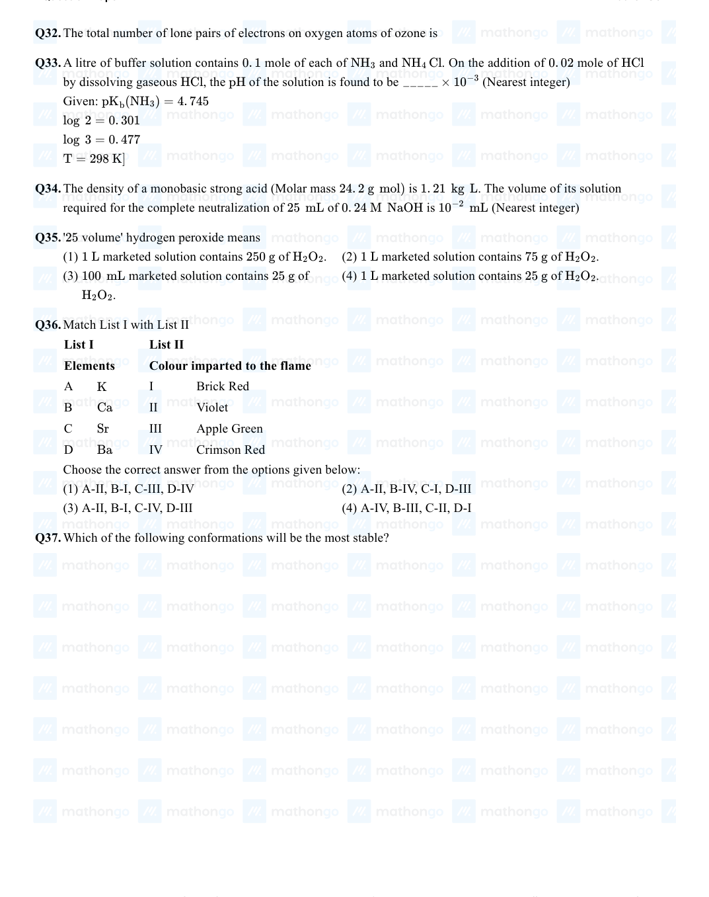

🧪 Basic Organic Chemistry
46
Total Questions
5
Years
3
Clusters
Question Clusters
CHEM-BASIORGA-ELECTRONIC_EFFECTS_STABILITY
Basic Organic Chemistry: Electronic Effects (Inductive, Resonance, Hyperconjugation)
CHEM-BASIORGA-ISOMERISM_GEOMETRIC_OPTICAL
Basic Organic Chemistry: Isomerism: Structural, Geometrical & Optical
CHEM-BASIORGA-ACIDIC_BASIC_STRENGTH_ORGANIC
Basic Organic Chemistry: Acidic & Basic Strength of Organic Compounds
Year-wise Frequency
| Year | Questions | Frequency |
|---|---|---|
| 2021 | 6 | |
| 2022 | 5 | |
| 2023 | 13 | |
| 2024 | 18 | |
| 2025 | 4 |
Questions
Q36 (2021 Shift 2)
Given below are two statements : Statement I : and both can generate nucleophile. C2H5 OH AgCN Statement II : KCN and AgCN both will generate nitrile nucleophile with all reaction conditions. Choose the most appropriate option :
CHEM-2021-0101-S2-Q036
Q36 (2021 Shift 1)
Among the given species the Resonance stabilised carbocations are:
CHEM-2021-0101-S1-Q036
Q45 (2021 Shift 2)
Indicate the complex/complex ion which did not show any geometrical isomerism : Cl2]+
CHEM-2021-0101-S2-Q045
Q36 (2021 Shift 1)
Staggered and eclipsed conformers of ethane are:
CHEM-2021-0101-S1-Q036
Q37 (2021 Shift 1)
The correct order of stability of given carbocation is:
CHEM-2021-0101-S1-Q037
Q36 (2021 Shift 2)
Arrange the following conformational isomers of n-butane in order of their increasing potential energy:
CHEM-2021-0101-S2-Q036
Q37 (2022 Shift 2)
Arrange the following carbocations in decreasing order of stability.
CHEM-2022-0101-S2-Q037
Q36 (2022 Shift 1)
In the following structures, which one is having staggered conformation with maximum dihedral angle?

CHEM-2022-0101-S1-Q036
Q58 (2022 Shift 2)
(a) CoCl3. 4 NH3 , (b) CoCl3 ⋅5 NH3 , (c) CoCl3 ⋅6 NH3 and (d) CoCl (NO3)2 ⋅5 NH3 Number of complex(es) which will exist in cis-trans form is/are
Answer:
1CHEM-2022-0101-S2-Q058
Q39 (2022 Shift 2)
Which of the following carbocations is most stable:

CHEM-2022-0101-S2-Q039
Q44 (2022 Shift 2)
The stable carbocation formed in the above reaction is :
CHEM-2022-0101-S2-Q044
Q45 (2023 Shift 2)
The correct IUPAC nomenclature for the following compound is:
CHEM-2023-0101-S2-Q045
Q38 (2023 Shift 2)
The decreasing order of hydride affinity for following carbocations is:
CHEM-2023-0101-S2-Q038
Q37 (2023 Shift 1)
Where Nu = Nucleophile Find out the correct statement from the options given below for the above two reactions.
CHEM-2023-0101-S1-Q037
Q47 (2023 Shift 1)
L-isomer of tetrose X ( C4H8O4 ) gives positive Schiff’s test and has two chiral carbons. On acetylation ‘X’ yields triacetate. ‘X’ also undergoes following reactions.

CHEM-2023-0101-S1-Q047
Q54 (2023 Shift 1)
The number of hyperconjugation structures involved to stabilize carbocation formed in the above reaction is __________.

Answer:
7CHEM-2023-0101-S1-Q054
Q51 (2023 Shift 2)
Given below are two statements, one is labelled as Assertion A and the other is labelled as Reasom R . Assertion A : A solution of the product obtained by heating a mole of glycine with a mole of chlorine in presence of red phosphorous generates chiral carbon atom. Reason R : A molecule with 2 chiral carbons is always optically active. In the light of above statements, chose the correct answer from the options given below: A R A R R (1) is true but is false (2) Both and are true but is the correct explaination of A (3) A is false but R is true (4) Both A and R are true but R is NOT the correct explaination of A
Answer:
224CHEM-2023-0101-S2-Q051
Q53 (2023 Shift 2)
If is replaced by in the complex [NiCl2 , which of the following properties are expected to get changed? A. Geometry B. Geometrical isomerism C. Optical isomerism D. Magnetic properties (1) A and D (2) A, B and C (3) B and C (4) A, B and D
Answer:
3CHEM-2023-0101-S2-Q053
Q52 (2023 Shift 1)
The incorrect statement regarding the reaction given below is (1) The product ‘ B ’ formed in the above reaction is p (2) ‘ B ’ is N -nitroso ammonium compound -nitroso compound at low temperature (3) The reaction occurs at low temperature (4) The electrophile involved in the reaction is NO+
Answer:
4CHEM-2023-0101-S1-Q052
Q57 (2023 Shift 1)
For the given reaction The, total number of possible products formed by tertiary carbocation of A is _______. − Q58. D −(+)− Glyceraldehyde i) HCN → ii)H2O/H+ iii) HNO3 The products formed in the above reaction are (1) One optically active and one meso product (2) Two optically inactive products (3) Two optically active products (4) One optically inactive and one meso product
Answer:
240CHEM-2023-0101-S1-Q057
Q45 (2023 Shift 1)
Assertion A: Hydrolysis of an alkyl chloride is a slow reaction but in the presence of NaI, the rate of hydrolysis increases. Reason R: I- is a good nucleophile as well as a good leaving group. In the light of the above statements, choose the correct answer from the options given below.
CHEM-2023-0101-S1-Q045
Q37 (2023 Shift 1)
Which of the following conformations will be the most stable?

CHEM-2023-0101-S1-Q037
Q55 (2023 Shift 1)
The correct order in aqueous medium of basic strength in case of methyl substituted amines is: (1) Me2 NH > MeNH2 > Me3 N > NH3 (2) Me2 NH > Me3 N > MeNH2 > NH3 (3) NH3 > Me3 N > MeNH2 > Me2 NH (4) Me3 N > Me2 NH > MeNH2 > NH3

Answer:
41500CHEM-2023-0101-S1-Q055
Q40 (2023 Shift 2)
The most stable carbocation for the following is:
CHEM-2023-0101-S2-Q040
Q40 (2024 Shift 1)
Ionic reactions with organic compounds proceed through:
CHEM-2024-0101-S1-Q040
Q42 (2024 Shift 1)
Which of the following compound will most easily be attacked by an electrophile?

CHEM-2024-0101-S1-Q042
Q40 (2024 Shift 2)
The functional group that shows negative resonance effect is:
CHEM-2024-0101-S2-Q040
Q42 (2024 Shift 1)
What will be the decreasing order of basic strength of the following conjugate bases? – – C–I −OH, RO, CH3COO, – – – –
CHEM-2024-0101-S1-Q042
Q37 (2024 Shift 2)
Correct order of stability of carbanion is -
CHEM-2024-0101-S2-Q037
Q38 (2024 Shift 2)
List - I List - II (Pair of compounds) (Isomerism) Match List I with List II
CHEM-2024-0101-S2-Q038
Q57 (2024 Shift 2)
Number of carbocations from the following that are not stabilized by hyperconjugation is _______

Answer:
5CHEM-2024-0101-S2-Q057
Q36 (2024 Shift 2)
The correct sequence of acidic strength of the following aliphatic acids in their decreasing order is: CH3CH2COOH, CH3COOH, CH3CH2CH2COOH, HCOOH
CHEM-2024-0101-S2-Q036
Q36 (2024 Shift 1)
Correct order of basic strength of Pyrrole , Pyridine , and Piperidine is:
CHEM-2024-0101-S1-Q036
Q55 (2024 Shift 1)
How many compounds among the following compounds show inductive, mesomeric as well as hyperconjugation effects?
Answer:
4CHEM-2024-0101-S1-Q055
Q35 (2024 Shift 2)
The incorrect statement regarding conformations of ethane is:
CHEM-2024-0101-S2-Q035
Q57 (2024 Shift 2)
Total number of compounds with Chiral carbon atoms from following is CH3 - CH2 - CHNO2 - COOH CH3 - CH ( I ) - CH2 - NO2 CH3 - CH2 - CHBr - CH2 - CH3 CH3 - CH2 - CH ( OH ) - CH2OH
Answer:
5CHEM-2024-0101-S2-Q057
Q37 (2024 Shift 1)
The interaction between π bond and lone pair of electrons present on an adjacent atom is responsible for
CHEM-2024-0101-S1-Q037
Q37 (2024 Shift 2)
Which one of the following will show geometrical isomerism?

CHEM-2024-0101-S2-Q037
Q36 (2024 Shift 2)
The correct stability order of carbocations is
CHEM-2024-0101-S2-Q036
Q57 (2024 Shift 2)
Number of complexes which show optical isomerism among the following is _________. 3 - 2 + + cis - Cr ( ox ) 2Cl2 , Co ( en ) 3 + , cis - Pt ( en ) 2Cl2 , cis - Co ( en ) 2Cl2 2 + 3 3 - , trans - Pt ( en ) 2Cl2 , trans - Cr ( ox ) 2Cl2
Answer:
4CHEM-2024-0101-S2-Q057
Q35 (2024 Shift 1)
A species having carbon with sextet of electrons and can act as electrophile is called
CHEM-2024-0101-S1-Q035
Q48 (2024 Shift 1)
Given below are two statements: One is labelled as Assertion A and the other is labelled as Reason R: Assertion A: Alcohols react both as nucleophiles and electrophiles. Reason R: Alcohols react with active metals such as sodium, potassium and aluminum to yield corresponding alkoxides and liberate hydrogen. In the light of the above statements, choose the correct answer from the options given below:
CHEM-2024-0101-S1-Q048
Q52 (2025 Shift 1)
The incorrect statements regarding geometrical isomerism are : (A) Propene shows geometrical isomerism. (B) Trans isomer has identical atoms/groups on the opposite sides of the double bond. (C) Cis-but-2-ene has higher dipole moment than trans-but-2-ene. (D) 2-methylbut-2-ene shows two geometrical isomers. (E) Trans-isomer has lower melting point than cis isomer. Choose the correct answer from the options given below : (1) (A) and (E) Only (2) (A), (D) and (E) Only (3) (B) and (C) Only (4) (C), (D) and (E) Only

Answer:
2CHEM-2025-0101-S1-Q052
Q52 (2025 Shift 1)
The complex that shows Facial - Meridional isomerism is: (1) 1.[Co(en)2Cl2]+ (2) [Co(en)3]3+ [Co(NH3)4Cl2]+ (3) [Co(NH3)3Cl3] (4)
Answer:
3CHEM-2025-0101-S1-Q052
Q55 (2025 Shift 1)
The correct order of stability of following carbocations is : (1) C > B > A > D (2) A > B > C > D (3) B > C > A > D (4) C > A > B > D
Answer:
4CHEM-2025-0101-S1-Q055
Q55 (2025 Shift 1)
Total number of nucleophiles from the following is : ⊖ NH3, PhSH, (H3C)2 S, H2C = CH2, O H, H3O⊕, (CH3)2CO, ⇌NCH3 (1) 7 (2) 4 (3) 6 (4) 5
Answer:
4CHEM-2025-0101-S1-Q055